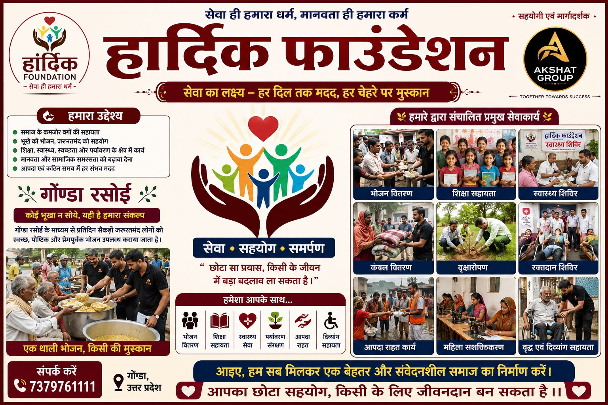

एक छोटा सा प्रयास, बड़ा बदलाव।
"छोटा सा प्रयास, किसी के जीवन में बड़ा बदलाव ला सकता है" — इसी सोच के साथ हार्दिक फाउंडेशन की स्थापना हुई। सेवा, सहयोग और समर्पण के तीन स्तंभों पर खड़ी यह संस्था समाज के हर वर्ग तक मदद पहुँचाने के लिए प्रतिबद्ध है।
समाज के कमज़ोर वर्गों की सहायता
भूखे को भोजन, ज़रूरतमंद को सहयोग
शिक्षा, स्वास्थ्य, स्वच्छता और पर्यावरण के क्षेत्र में कार्य
मानवता और सामाजिक समरसता को बढ़ावा देना
आपदा एवं कठिन समय में हर संभव मदद

प्रमुख सेवाकार्य।
भोजन वितरण
गोंडा रसोई के माध्यम से प्रतिदिन जरूरतमंदों को भोजन।
शिक्षा सहायता
बच्चों को शिक्षण सामग्री व मार्गदर्शन।
स्वास्थ्य शिविर
निःशुल्क स्वास्थ्य जांच व परामर्श शिविर।
कंबल वितरण
सर्दियों में गर्म वस्त्र व कंबल वितरण।
वृक्षारोपण
पर्यावरण संरक्षण हेतु सामुदायिक अभियान।
रक्तदान शिविर
नियमित रक्तदान शिविरों का आयोजन।
आपदा राहत कार्य
आपदा में तत्काल भोजन व राहत सामग्री।
महिला सशक्तिकरण
कौशल प्रशिक्षण से महिलाओं को आत्मनिर्भर बनाना।
वृद्ध एवं दिव्यांग सहायता
वृद्धजनों व दिव्यांगजनों को विशेष सहयोग।
एक विचार से एक निरंतर सेवा तक।
जनसेवा ही जिनका धर्म है।
आपका आशीर्वाद, हमारी ताकत।

पीयूष पाण्डेय
"जनसेवा ही मेरा धर्म" के संकल्प के साथ गोंडा रसोई की स्थापना और संचालन में अग्रणी भूमिका। आपका प्यार और विश्वास ही सेवा के मार्ग पर आगे बढ़ने की प्रेरणा है।
📞 9454809000

पीयूष पोंडे
"सेवा ही संकल्प, समाज ही परिवार" के भाव के साथ भोजन सेवा, शिक्षा सहायता, स्वास्थ्य शिविर व पर्यावरण संरक्षण जैसे कार्यों में निरंतर सक्रिय भागीदारी।
Akshat Group — Together Towards Success
अक्सर पूछे जाने वाले प्रश्न।
भोजन वितरण, शिक्षा सहायता, स्वास्थ्य सेवा, पर्यावरण संरक्षण, आपदा राहत, महिला सशक्तिकरण व वृद्ध-दिव्यांग सहायता — कुल 9 प्रमुख सेवाकार्यों में।
बिल्कुल! हम हमेशा समर्पित स्वयंसेवकों का स्वागत करते हैं। संपर्क करें: 7379761111
Akshat Group हार्दिक फाउंडेशन के सेवाकार्यों में सहयोगी एवं मार्गदर्शक की भूमिका निभाता है।
सेवा करें, प्रेरणा बनें, बदलाव लाएं।
गोंडा रसोई टीम से जुड़ें और सेवा का हिस्सा बनें — भोजन सेवा में सहयोग करें, जरूरतमंदों की मदद करें।